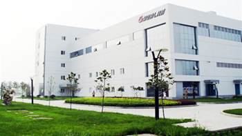

公司介绍

华兰概况
华兰生物工程股份有限公司(前身为华兰生物工程有限公司)成立于1992年， 是从事血液制品研发和生产的重点高新技术企业，并首家通过血液制品行业的GMP认证。作为国家定点大型生物 制品生产企业，公司以雄厚的技术开发实力、先进的技术水平及生产检测设备、科学规范的经营管理和完善的质 量保证体系。公司先后承担多项国家、省、市级科技攻关项目，其中外科用冻干人纤维蛋白胶被列入国家863项目。华兰博士后科研工作站，河南省生物医药工程技术中心和中国科学院生物技术创新与产业化共同基金及中国科学院的多个联合实验室的成立，为企业的高成长性和核心竞争力奠定了坚实的基础。新闻之窗
- 华兰生物工程重庆有限公司 人血浆蛋白制品深度开发项目 环境影响
- 华兰生物疫苗有限公司 冻干人用狂犬病疫苗项目 环境影响报告书
- 华兰生物疫苗有限公司 冻干人用狂犬病疫苗项目 环境影响评价二次
- 国家药品监督管理局焦红局长一行调研华兰生物
- 公司董事长安康先生荣膺“纪念改革开放40年医药产业功勋人物”
- "大流行流感和季节性流感新型疫苗研究及应用"研讨会在中原经济
视频中心
- 记录百年流感华兰生物
- 新闻联播--我国首批甲型H1N1流感疫苗下线
- 前国家副主席曾庆红视察华兰视频
- 前国家主席胡锦涛视察华兰视频
- 华兰生物视频简介
- 华兰生物工程重庆有限公司 人血浆蛋白制品深度开发项目 环境影响
健康科普
- 圆环疫苗分类和各类优缺点
- 为什么注射流感疫苗后还
- 体弱者春运前可接种流感
- 孩子疫苗接种 注意8个不
- 打了水痘疫苗 并非终身
- 华兰生物工程重庆有限公司 人血浆蛋白制品深度开发项目 环境影响
新闻之窗
- 华兰生物工程重庆有限公司 人血浆蛋白制品深度开发项目 环境影响
- 华兰生物疫苗有限公司 冻干人用狂犬病疫苗项目 环境影响报告书
- 华兰生物疫苗有限公司 冻干人用狂犬病疫苗项目 环境影响评价二次
- 国家药品监督管理局焦红局长一行调研华兰生物
- 公司董事长安康先生荣膺“纪念改革开放40年医药产业功勋人物”
- "大流行流感和季节性流感新型疫苗研究及应用"研讨会在中原经济
华兰生物(002007.SZ)
33.24
今 开：33.03
最 高：33.45
最 低：32.69
2020-01-14 12:34:03